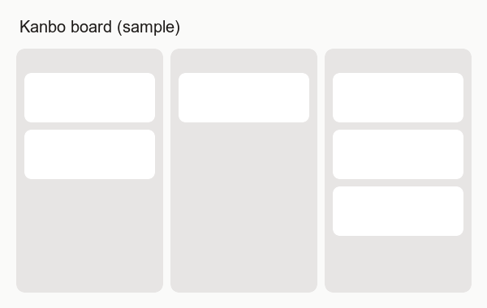
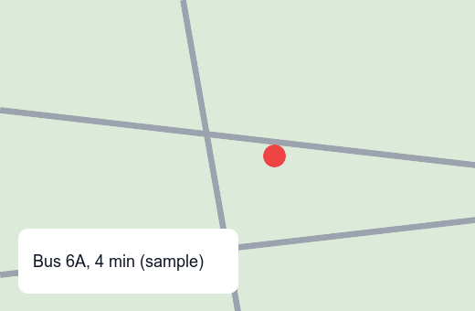

Full-stack engineer building web products.
I design and ship TypeScript and Go systems, from database to interface.
View projects


I design and ship TypeScript and Go systems, from database to interface.
View projects
